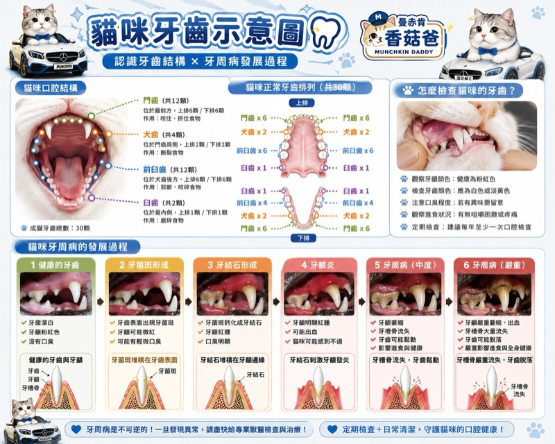

貓咪牙齒圖解結構 × 檢查 × 牙周病
CAT DENTAL GUIDE
主子的嘴巴
主子的嘴巴
你多久沒看過了
成貓有 30 顆牙 ~ 但大部分毛家長從來沒有真的數過
🦷 30 顆結構👀 五個檢查點📉 牙周病六階段
01｜完整圖解
一張圖看懂
點圖可以看大圖 ~ 存下來比較實在

🔍 點一下看大圖02｜口腔結構
30 顆牙分成四種
每一種負責的事情不一樣
成貓牙齒總數 30 顆
幼貓是 26 顆乳牙 ~ 大約 3-7 個月換成 30 顆恆牙
換牙那段時間牙齦不舒服，咬東西的慾望會變強，這是正常的
換牙那段時間牙齦不舒服，咬東西的慾望會變強，這是正常的
03｜怎麼檢查
五個地方看一下就好
不用工具 ~ 平常摸摸嘴巴順便看
04｜牙周病
它是這樣一步一步來的
點開看每個階段會出現什麼
!
這件事我不能幫你判斷
牙齦紅腫出血、明顯口臭、只用單邊咀嚼、不敢吃硬的、牙齒鬆動或流口水——這些都要由獸醫實際看過才知道到哪個程度 ~ 我只能分享我看過的狀況，不是醫療建議
牙周病造成的骨頭流失是回不去的 ~ 所以重點不是嚇你，是早一點發現
每隻貓的體質、飲食和口腔狀況差很多，該多久檢查一次、要不要洗牙，請跟你的獸醫討論 💗
每隻貓的體質、飲食和口腔狀況差很多，該多久檢查一次、要不要洗牙，請跟你的獸醫討論 💗
05｜從幼貓開始
換牙期就是最好的起點
刷牙這件事，成年後才開始幾乎都會失敗 ~ 因為牠沒被碰過嘴巴
換牙那段時間牠本來就想咬東西，順著這個時機讓牠習慣手指碰牙齦，長大後才碰得了
換牙那段時間牠本來就想咬東西，順著這個時機讓牠習慣手指碰牙齦，長大後才碰得了